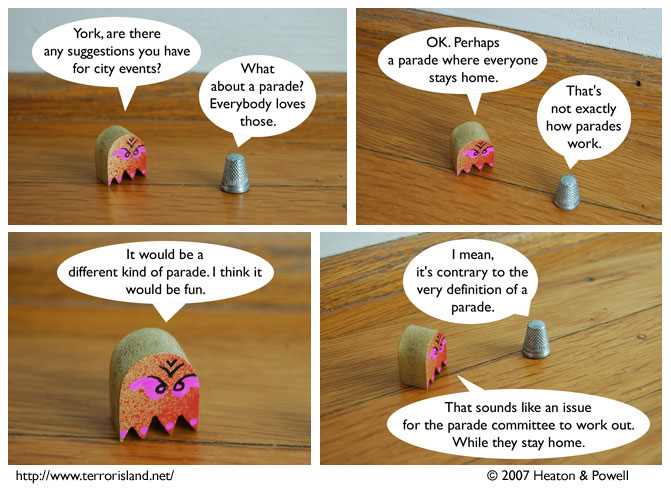

Strip #238
— Wednesday, December 19, 2007
It’s nice of Blueteen to ask York for advice.
Notes, Thoughts, &c.
Ben’s Notes
As I hope many of you have already realized, the part of Blueteen is played by a mini-ghost made by Chris Yates. It’s a fun item to photograph.
Lewis’s Notes
Parades are a common Czar proposal in Terror Island, because if I were a Czar, I’d spend all my time organizing parades.
I wrote Lewis’s comments today. -Ben